正文:
你们的赞和评论实在是惊到我了，要知道，宝宝只是知乎上的一个小透明啊，非常感谢大家的喜欢，真的很开心呢，胡先生看到了，开心的这几天尾巴都翘到天上去了
评论里很多小可爱担心我的体重问题，在这里要跟大家说一下，健康最重要！健康最重要！健康最重要！因为我的体重超标，今年年初的时候一度以为自己得了糖尿病，去医院做了体检，还好都正常，医生也建议我控制体重了
我们只是很普通的一对情侣，每天也跟其他人一样，会开心，也会争执吵架，不过胡先生真的对我很好，我们打算明年要结婚了，担心拍照片不好看，所以现在在努力减肥了^_^
愿大家也能早日找到自己的另一半，明年我还会来更新照片的，那些在评论中说要跟我一起减肥的，一起加油啊！
更多好看的，来我微信瞅瞅吧
http://weixin.qq.com/r/U0SlvZXErsjRrdHe9xFB (二维码自动识别)
最后再贴一张胡先生和我家八哥的照片
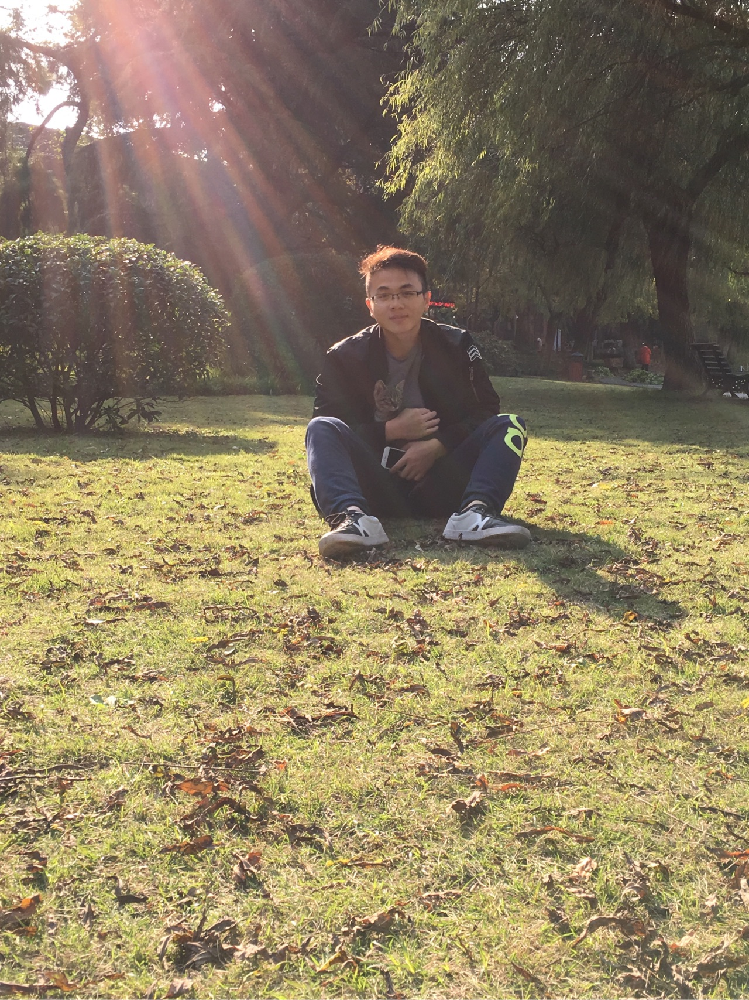分割线_________________________________________________
这是目前为止，我在知乎看到的最适合我的问题
我是在上大学之后胖起来的，大学初期是这样的
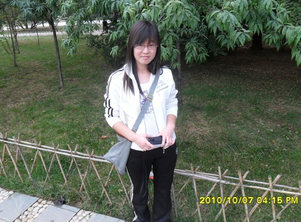大学毕业时是这样的
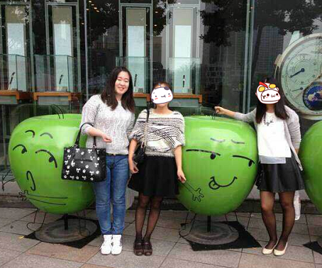这样的
对，就是那个胖子，我162，那会大概120斤，大学期间特别爱睡觉，睡完就吃，吃完再睡，开学时宿舍同学枕头都是鼓鼓的，一个学期结束，别人的枕头还是鼓鼓的，我的枕头扁扁的。
后来想，毕业工作肯定会很辛苦，一定会瘦下来的，嗯，一定会的
毕业后一年的我
都是骗人的啊，根本没有瘦啊，哭。。。也就是差不多这个时候，遇见了我现在的男朋友，戏剧性的是，男朋友是个健身狂魔，遇见我之前差不多每天都要去健身房，开始我也是跟着去的，总有那么一段时间你想减肥的嘛，后来，后来觉得太他么累了啊，好想坐在家看电视吹空调，所以就没坚持下去了，爆张男朋友照片
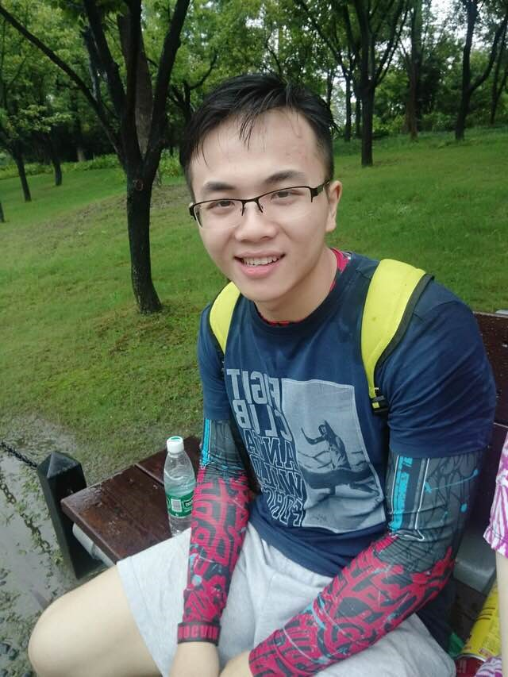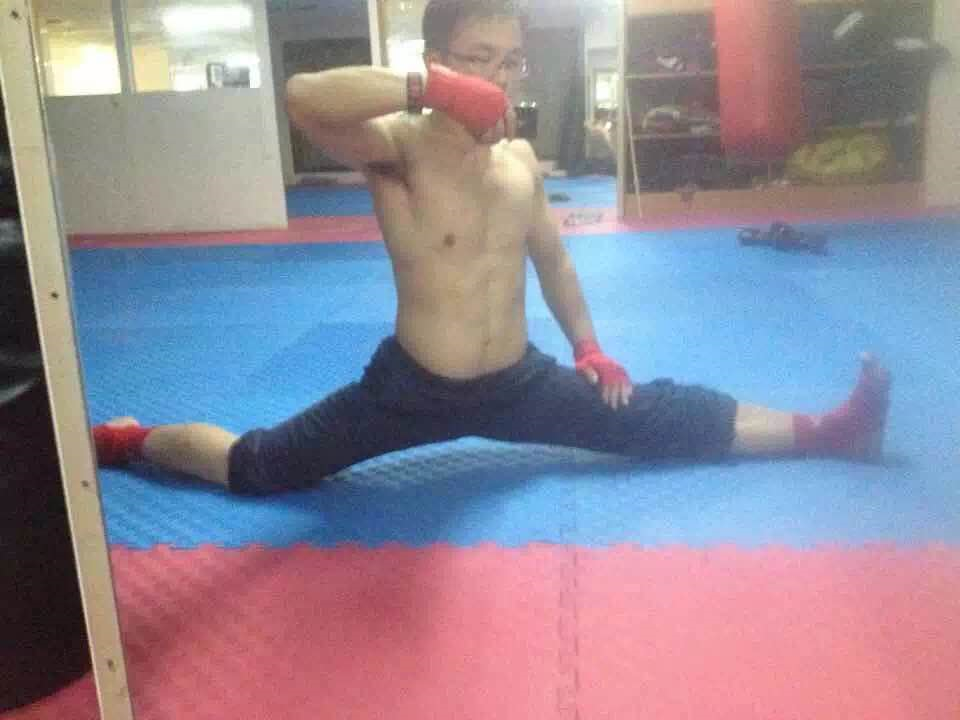
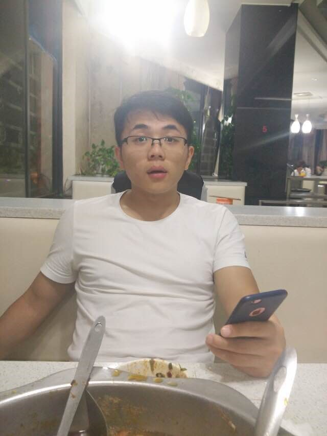
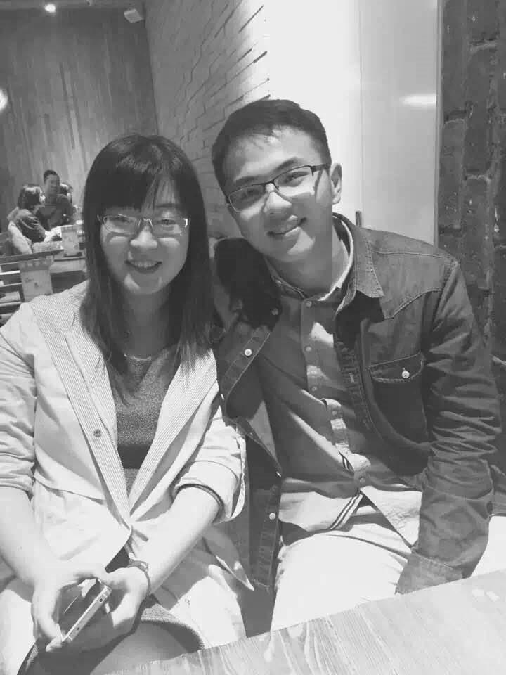
说实话，也不知道他啥时候瞎的，难道因为我心灵出奇的美？之后问过他这个问题，他说是因为觉得我们三观很合，WHAT？现在我的体重现在都快赶上他了
话说我为什么会胖呢，很简单，能吃，还不愿意动，这是跟男朋友在一起之后列出来的要去吃的地方，
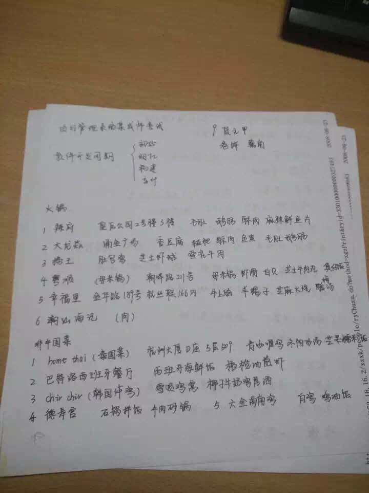
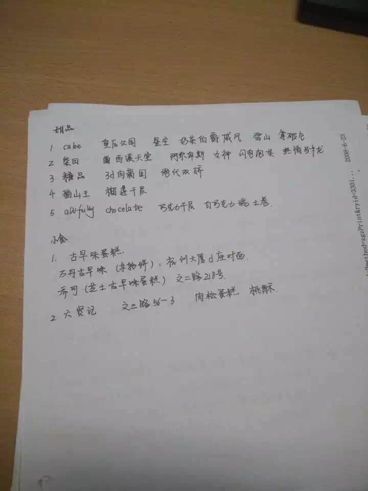
回到正题，要说有一个胖胖的女朋友是什么体验呢，那大概就是，
1.自己也会跟着变胖吧，在遇见我之前，男朋友是从来不吃零食的，现在呢，吃的比我都欢，每次买来的零食都被他吃光（我爱吃饭，零食吃的不多），
2.厨艺好了很多，之前男朋友做饭，我几乎是不会吃的，因为真的不好吃啊，后来经过不懈努力，现在厨艺大有进步
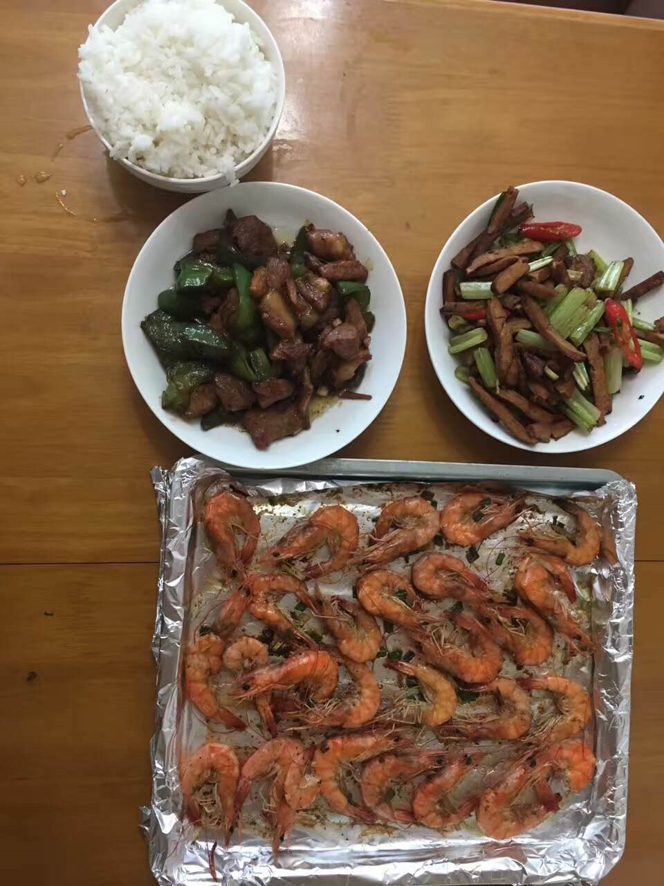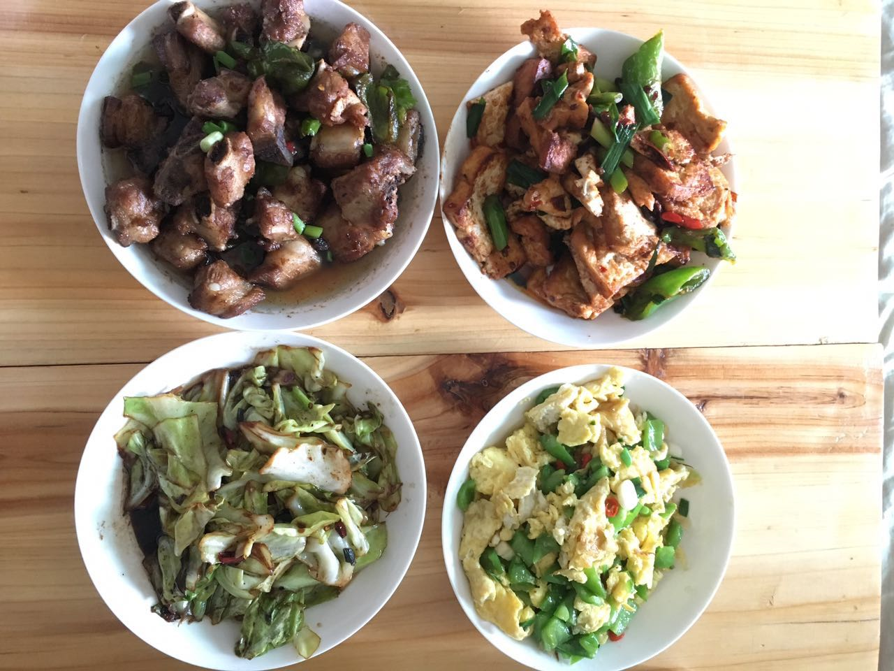
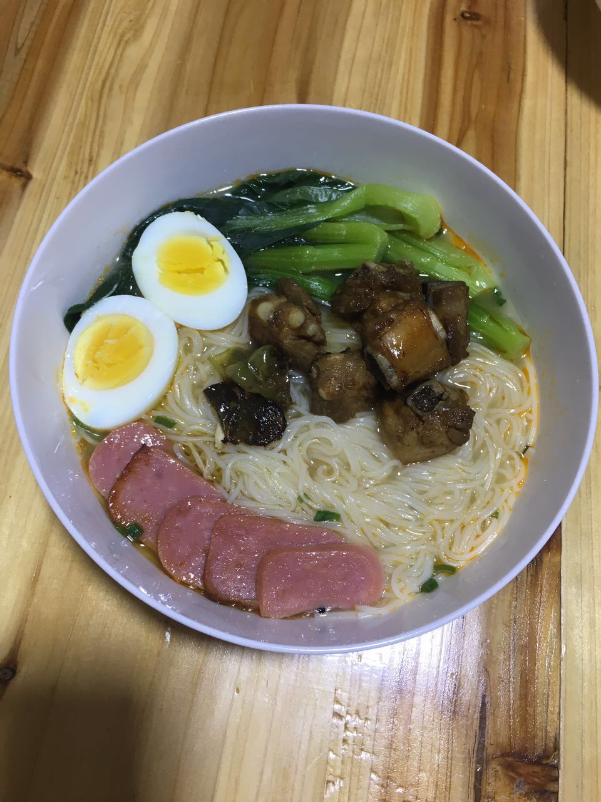
所以这是现在的我，已经快突破140了，胡先生跟我在一起，是想要学习如何养猪致富吗？
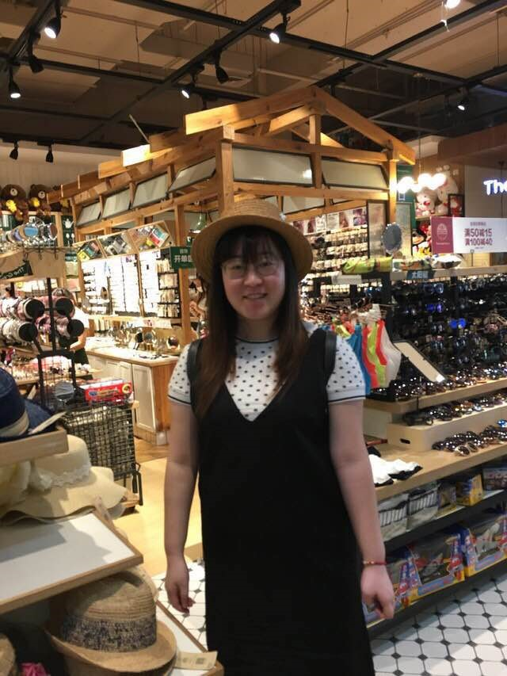
说好的减肥呢
好了，在这里第101次郑重地说，我要减肥了